Video compression fundamentals
Vicente González Ruiz
January 1, 2020
Contents
2 Block-based MC (Motion Compensation) [1]
- Usually, only performed by the encoder (compress one. decompress many).
- MC removes temporal redundancy. A predicted image can be encoded as
the difference between it and another image called prediction image which
is a motion compensated projection of one or more images named reference
images. ME tries to generate residue images as close as possible to the
null images.
- For example, in the MPEG-1 standard, the reference image/s is/are divided
in blocks of
pixels called macroblocks.
- Each reference block is searched in the predicted image and the best match
is indicated by mean of a motion vector.
- Depending on the success of the search and the number of reference images,
the macroblocks are classified into:
- I (intra): When the compression of residue block generates more
bits than the original (predicted) one.
- P (predicted): When it is better to compress the residue block and
there is only one reference macroblock.
- B (bidirectionally predicted): The same, but if we have two
reference macroblocks.
- S (skipped): When the energy of the residue block is smaller than
a given threshold.
- I-pictures are composed of I macroblocks, only.
- P-pictures do not have B macrobocks.
- B-pictures can have any type of macroblocks.
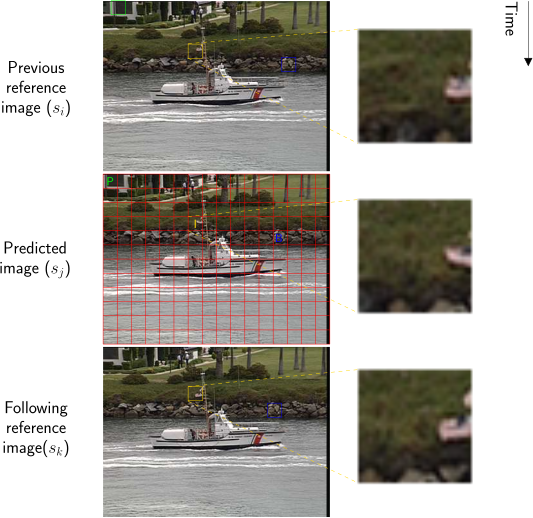
3 Sub-pixel accuracy
- The motion estimation can be carried out using integer pixel accuracy or
a fractional (sub-) pixel accuracy.
- For example, in MPEG-1, the motion estimation can have up to 1/2 pixel
accuracy. A bi-linear interpolator is used:
4 Matching criteria (similitude between macroblocks)
- Let
and
the macroblocks which we want to compare. Two main distortion metrics
are commonly used:
- MSE (Mean Square Error):
|
| (1) |
- MAE (Mean Absolute Error):
|
| (2) |
- These similitude measures are used only by MPEG compressors. Therefore, any
other one with similar effects (such as the error variance or the error entropy)
could be used also.
- Other less common distortion metrics that can work are:
- EE (Error Entropy:
|
| (3) |
5 Searching strategies
- Only performed by the compressor.
- Full search: All the possibilities are checked. Advantage: the best
compression. Disadvantage: CPU killer.
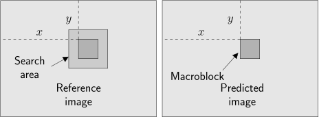
- ** Logaritmic search**: It is a version of the full search algorithm
where the macro-blocks and the search area are sub-sampled. After
finding the best coincidence, the resolution is increased in a power of 2
and the previous match is refined in a search area of ,
until the maximal resolution (even using subpixel accuracy) is reached.
- Telescopic search: Any of the previously described techniques can
be speeded up if the searching area is reduced. This can be done
supposing that the motion vector of the same macro-block in two
consecutive images is similar.
6 The GOP (Group Of Pictures) concept
- The temporal redundancy is exploited by blocks of images called GOPs.
This means that a GOP can be decoded independently of the rest of GOPs.
Here an example:
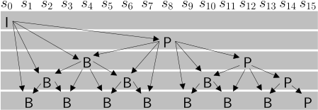
7 MCTF (Motion Compensated Temporal Filtering)
- This is a DWT where the input samples are the original video images and
the output is a sequence of residue images.
8
1-spiral-search ME (Motion Estimation)
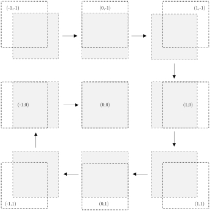
9 Linear frame interpolation using block-based motion compensation
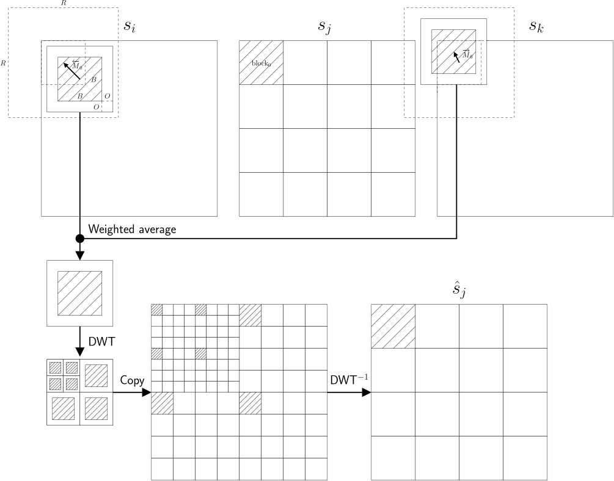
9.1 Input
- :
square search area, in pixels.
- :
square block size, in pixels.
- :
border size, in pixels.
- ,
and
three chronologically ordered, equidistant frames, with resolution .
- :
subpixel accuracy.
9.2 Output
- :
a prediction for frame .
- :
a matrix with
bidirectional motion vectors.
- :
a matrix with
bidirectional Root Mean Square matching Wrrors (RMSE).
9.3 Algorithm
- Compute the DWT,
where
levels, of the predicted frame
and the two reference frames
and .
Example.
- ,
or any other precomputed values (for example, from a previous ME in
neighbor frames). Example.
- Divide the subband
into blocks of size
pixels, and -spiral-search
them in the subbands
and ,
calculating a low-resolution
bi-directional motion vector field. Example. Example.
- While :
- Synthesize ,
,
and ,
by computing the 1-level DWT.
Example. Example
- .
Example.
- Refine
using -spiral-search.
Example.
- .
(When ,
the motion vectors field
has the structure:)
Example.
- While (in the
first iteration, ,
and ):
- .
- Synthesize ,
and ,
computing the 1-level DWT
(high-frequency subbands are ).
This performs a zoom-in in these frames using -subpixel
accuracy.
Example.
- .
Example.
- .
- Divide the subband
into blocks of
pixels and -spiral-search
them into the subbands
and ,
calculating a
sub-pixel accuracy
bi-directional motion vector field. Example.
- Frame prediction. For each block :
- Compute
|
| (4) |
where
is the (minimum) distortion of the best backward matching for block
,
the (minimum) distortion of the best forward matching for block
,
are the backward and forward maximum matching distortions,
is the (backward) block found (as the most similar to
) in
frame
and
is the (forward) block found in frame
. Notice
that, if ,
then the prediction is
and if ,
and viceversa.
9.4 Lab
Implement the Section 9 (work on
https://github.com/Sistemas-Multimedia/MCDWT/blob/master/transform/mc/block/interpolate.py).
Use https://github.com/Sistemas-Multimedia/MCDWT/blob/master/mcdwt/mc/block/interpolate.py and
https://github.com/vicente-gonzalez-ruiz/MCTF-video-coding/blob/master/src/motion\_estimate.cpp
as reference.
9.5 Lab
Compare the performance of the proposed matching strategies (MSE, MAE and EE) in the
Section 9, by computing the variance of the prediction error between the original frame
() and the
prediction frame ().
9.6 Lab
Test different DWT filters in the Section 9 and compare their
performance. Compute the prediction error between the original frame
() and the
prediction frame ().
Measure the dependency between this performance and the distance between frames
(,
, and
indexes).
9.7 Lab
Test the use of both the luma and the chroma in Section 9, and measure
the performance of each option (only luma vs. all components),
by computing the prediction error between the original frame
() and the
prediction frame ().
Measure the dependency of the results with the distance between frames
(,
, and
indexes).
9.8 Lab
Analyze the impact of the
(search range) parameter in the Section 9. Compute the prediction error between the original
frame () and the
prediction frame ().
Study the impact of initializing the motion vectors (Section
??). Measure the dependency with the distance between frames
(,
, and
indexes).
IPython notebook
9.9 Lab
Analyze the impact of the
(overlaping) parameter in the Section ??, by means of
computing the prediction error between the original frame
() and the
prediction frame ().
Measure the dependency with the distance between frames
(,
, and
indexes).
9.10 Lab
Analyze the impact of the
(block size) parameter in the Section ??, by computing the prediction error between the original
frame () and the
prediction frame ().
Compute the expected size of the motion fields using their 0-order
entropy. Measure the dependency with the distance between frames
(,
, and
indexes).
9.11 Lab
Analyze the impact of the
(subpixel accuracy) parameter in the Section ??, by computing the prediction error between the
original frame () and
the prediction frame ().
Compute the expected size of the motion fields using their entropy.
Measure the dependency with the distance between frames
(,
, and
indexes).
IPython notebook
9.12 Lab
Compare the performance of the Section ?? when it holds that
for all blocks.
10 MC/DWT hybrid coding alternatives
- t+2d: The sequence of images is decorrelated first along the time (t) and
the residue images are compressed, exploiting the remaining spatial (2d)
redundancy. Examples: MPEG* and H.26* codecs (except H.264/SVC).
- 2d+t: The spatial (2d) redudancy is explited first (using typically the
DWT) and after that, the coefficients are decorrelated along the time (t).
For now, this has only been an experimental setup because most DWT
transformed domains are not invariant to the displacement, and therefore,
ME/MC can not be directly applied.
- 2d+t+2d: The fist step creates a Laplacian Pyramid (2d), which
is invariant to the displacement. Next, each level of the pyramid
is decorrelated along the time (t) and finally, the remaining spatial
redundancy is removed (2d). Example: H.264/SVC.
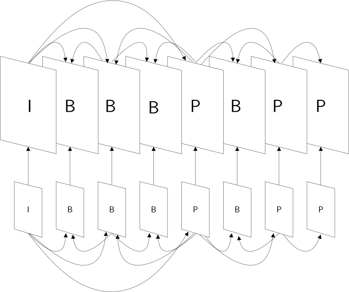
11 Deblocking filtering
- If any other block-overlaping techniques have not been applied,
block-based video encoders improve their performance if a deblocking filter
in used to create the quantized prediction predictions.

- The low-pass filter is applied only on the block boundaries.
12 Bit-rate allocation
- VBR: Under a constant quantization level (constant video quality), the
number of bits that each compressed image needs depends on the image
content (Variable Bit-Rate). Example: 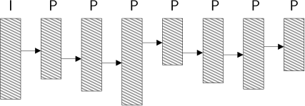
- CBR: Using a Constant Bit-Rate strategy, all frames need the same space.
Example: 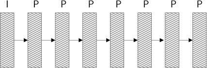
13 Video scalability
13.1 Quality scalability
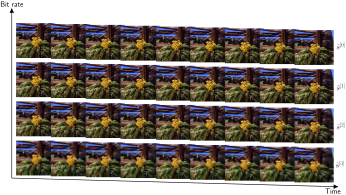
- Ideal for remote visualization environments.
- By definition, .
13.2 Temporal scalability
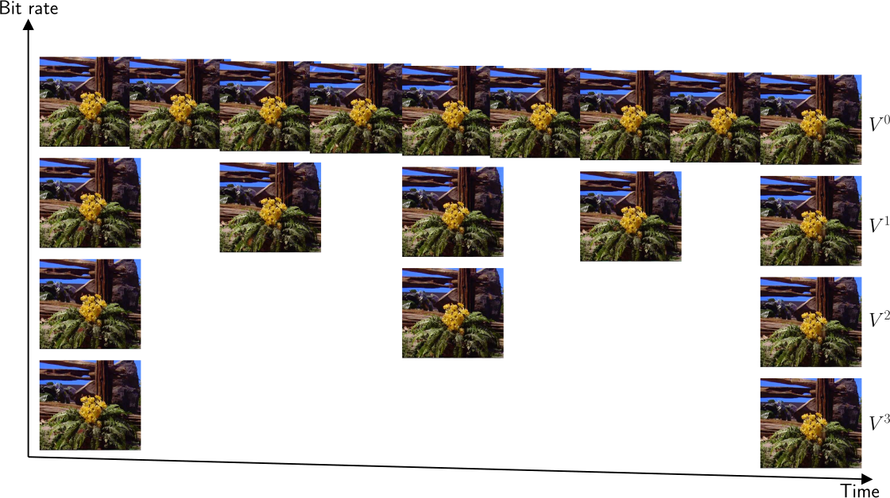
13.3 Spatial scalability
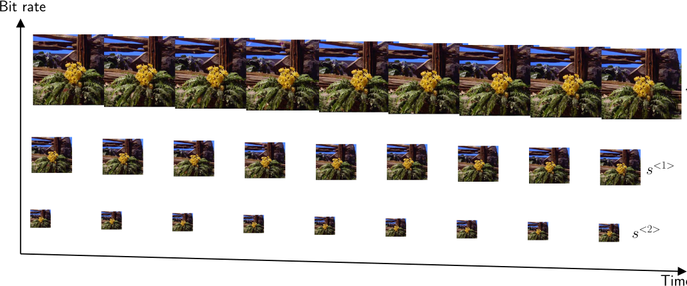
- Useful for low-resolution devices.
- By definition,
and
has a
resolution, where
is the resolution of .
References
{kind=link}
{kind=link}
{kind=link}
{kind=link}
{kind=link}
{kind=link}
{kind=link}
{kind=link}
{kind=link}
{kind=link}
{kind=link}
{kind=link}